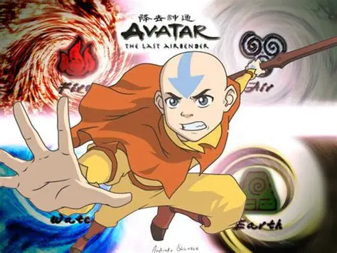

Desenho

Avatar: A lenda de Aang
Sinopse
O garoto Aang é o atual sucessor de uma longa linhagem de Avatares, que são capazes de manipular os elementos Ar, Terra, Água e Fogo. Ele acorda de uma longa hibernação para salvar o mundo dos ataques da Nação do Fogo, cujo plano é dominar o mundo.
Prêmios
- Emmy Awards: Venceu o prêmio de realização individual excepcional em animação(2007)
- Annie Awards: A série dominou várias categorias ao longo dos anos, vencendo como:
- Melhor produção de TV para crianças: (2009)
- Melhor direção: ( em 2007 e 2009)
- Melhor storyboard e animação de personagem:
- Peabody Award: (2008)Este é um dos prêmios mais prestigiados da mídia americana. Avatar o venceu por apresentar "Personagens multidimensionais e um respeito saudável pelas consequências da guerra", algo raro para um desenho infantil."
- Kids' Choice Awards:Venceu como desenho favorito em 2008, provando que era um sucesso absoluto também com a audência jovem